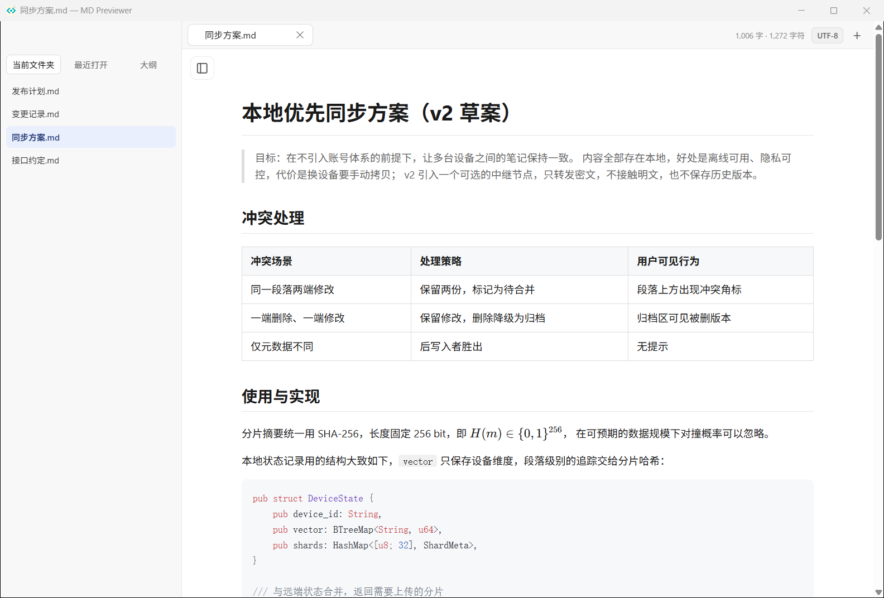
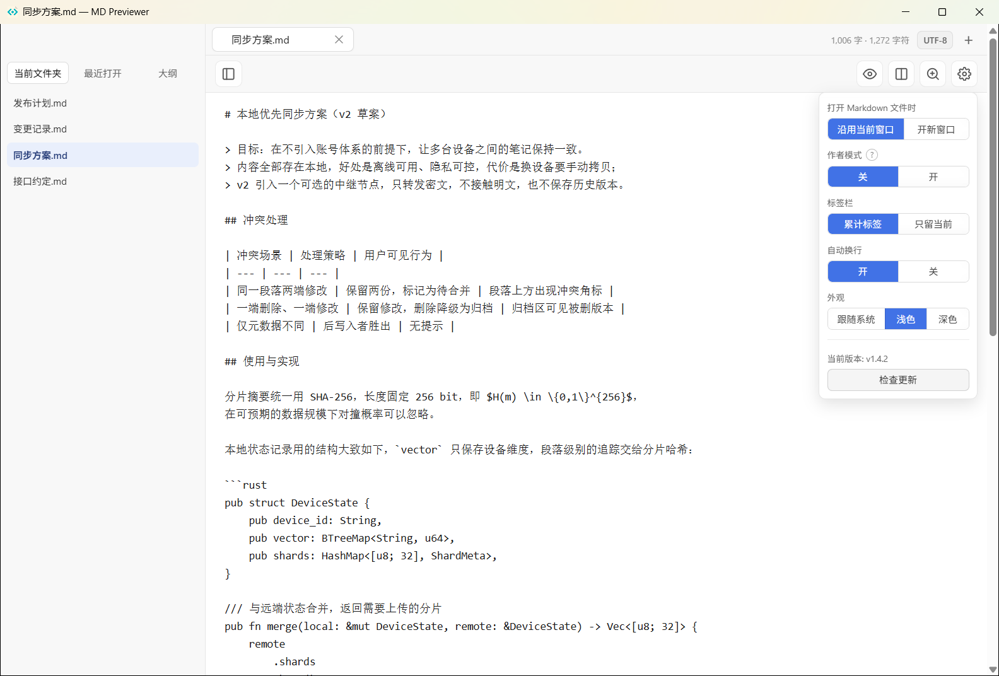
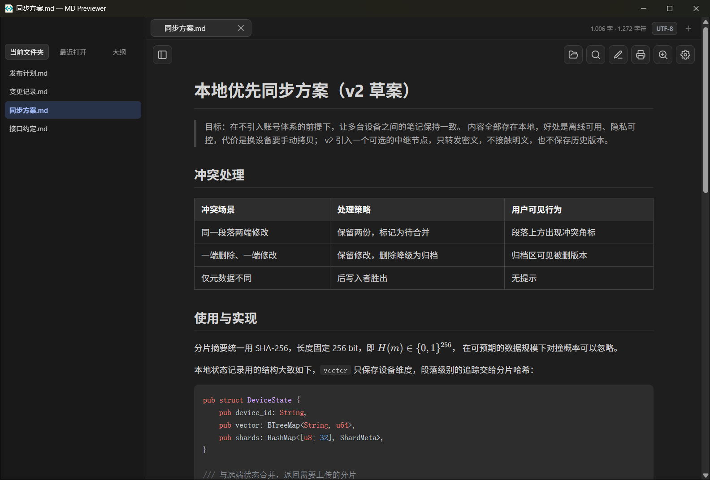

MD Previewer 是一个本地优先的 Markdown 阅读器与编辑器。它用 Rust 加系统自带的 WebView 写成， 不打包浏览器内核，双击即开、秒出正文；渲染全在本地完成，不上传任何文档。
下载链接永远指向最新版本，不用管版本号。App 内也能检查更新并直接升级。
界面
左侧是当前文件夹与最近打开，中间是正文，标签栏在顶部——没有多余的侧边面板和工具栏干扰阅读。



功能
特别是 AI 生成的长文档、写作项目里的章节文件、手机传到电脑上的 .md——这些文件用重型编辑器打开太慢，用记事本打开又看不清结构。
不只是 .md——任何后缀的纯文本（.txt、.json、.log、源码）都能直接打开阅读，8 KB 二进制嗅探会拦住误开的程序与压缩包。
Ctrl+E 在预览与源码之间切换，Ctrl+\ 分栏对照。编辑时实时预览，改完直接保存回原文件。
Ctrl+F 在正文里查找并高亮，回车逐个跳转；侧栏能从标题生成大纲，滚动时自动跟着高亮当前位置。
一次打开多个文档；退出后重新打开会恢复上次的标签。同一份文档也能开两个窗口左右对照。
磁盘上的文件被其他程序改写时，这里会自动重载。如果你正好有未保存的修改，它会先把冲突摆出来问你怎么处理，而不是默默覆盖。
自动识别 UTF-8、UTF-8 BOM、GBK / ANSI、UTF-16 LE/BE。老文档乱码时，可以按指定编码重新打开，或转码后另存为新文件。
KaTeX 数学公式、Mermaid 流程图时序图、代码语法高亮，都随安装包离线带走，断网也能正常渲染，代码块右上角一键复制。
跟随系统深浅色，也可以强制浅色或深色；缩放比例会被记住，长表格和长代码行可以一键换行。
不收集数据、不埋点、不要账号，打开文档不产生任何网络请求。唯一的联网动作是你主动点「检查更新」。
发现新版本后可以直接在应用里下载，进度条看得见，下完自动替换重启，不用再手动去网页里找安装包。
写长文的人可以把作者批注、章节编号这类内容折叠起来，只留干净正文给读者，开关就在设置面板里。
Ctrl+P 直接调系统打印（不是浏览器打印对话框），Ctrl+Shift+S 另存为，编码可选。
快捷键
macOS 上把 Ctrl 换成 Cmd 即可，下面这些快捷键两边一致。
| Ctrl+O | 打开文件 |
| Ctrl+N | 新建 Markdown |
| Ctrl+F | 在正文里查找 |
| Ctrl+E | 预览 / 编辑模式切换 |
| Ctrl+\ | 分栏对照编辑 |
| Ctrl+S | 保存 |
| Ctrl+Shift+S | 另存为 |
| Ctrl+P | 打印 |
| Ctrl+W | 关闭当前标签 |
| Ctrl++ / - / 0 | 放大 / 缩小 / 恢复默认缩放 |
| Ctrl+R | 重新渲染当前文档 |
| Esc | 关闭浮层，或退出编辑模式 |
安装
推荐用安装包：装完会把 .md 关联到 MD Previewer，双击文档直接打开，并写入卸载信息。
安装包暂时没有代码签名，Windows 可能提示「未知发布者」。点「更多信息」→「仍要运行」即可；下载页下方也附了 SHA-256 校验文件。
MD-Previewer-windows-x64.exe 是单文件版本，放到任意目录双击就能用，卸载就是删掉它。
系统要求：Windows 10 1809 或更高（Windows 11 均可）。渲染用的是系统自带的 WebView2，Win10 1809 之前的系统可能需要另外装一次 WebView2 Runtime。
移动端
iOS 与 Android 各有一个只读预览版，共用同一套渲染逻辑：在文件管理器、微信或其他应用里用「打开方式」选中 MD Previewer，就能看到排版好的正文， 不用担心手机上没有编辑器打不开。Android 包已经可以直接下载安装；iOS 需要 macOS + Xcode 自行构建，尚未提供二进制。
原生 WebView 外壳，支持 ACTION_VIEW 与分享进入。下载 MD-Previewer-mobile.apk（选「允许安装未知应用」即可）。
UIKit + WKWebView，支持系统「用其他应用打开」。目前需自行用 Xcode 构建：mobile/ios。
移动端定位是「看一眼就走」：不登录、不上传、不弹广告，安卓包连网络权限都没声明。
常见问题
不会。渲染、搜索、公式和图表全部在本地完成，应用只在更新检查时访问一次 GitHub 的发布接口（你也可以完全不管它）。没有统计、没有遥测、没有账号。
因为它不携带 Chromium：界面跑在系统自带的 WebView 上，安装包只有几 MB，冷启动不需要先拉起一个浏览器内核。
能。源码编辑、实时预览、分栏对照、另存为和编码转换都有。它不是 IDE，没有插件生态和 Git 面板——如果你要的是「快速看、顺手改」，这个取舍刚好。
点标题栏下方的编码标签，选「以指定编码重新打开」；要长期使用就选「转换为指定编码」，再用 Ctrl+S 保存。
这是从 MD Preview 派生出来的分支，做了品牌隔离并换成自己的发布与更新通道，保留 MIT 许可。
下载
下面每个链接都指向 GitHub 上最新一版 release 的固定文件名，因此不会过期。
| 平台 | 包 | 下载 |
|---|---|---|
| Windows 10/11 | 安装包（推荐） | MD-Previewer-Setup.exe |
| Windows 10/11 | 免安装单文件 | MD-Previewer-windows-x64.exe |
| Android | 只读预览版 | MD-Previewer-mobile.apk |
| iOS | 只读预览版 | 需自行用 Xcode 构建 |
| 源码 | Rust · MIT | GitHub 仓库 |
| 校验 | SHA-256 | SHA256SUMS.txt |
Windows 版本暂未做代码签名，首次运行可能被 SmartScreen 拦一下，属正常现象。